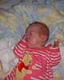
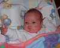
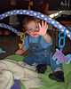
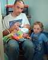

22nd September 2001
Poppy had a quiet day today, and spent some time in her car seat watching the mobile. She is very attentive and is requiring more and more stimulation - another reason why we want her home.
21st September 2001
Today Poppy's oxygen requirement increased unexpectedly. This has made us decide to arrange for Poppy to come home on oxygen if neccessary. This will take a couple of weeks to organise so hopefully by the time everything is ready she will no longer require it.

20th September 2001
Poppy has spent most of the day breathing in air - great news. Aeryn has been kissing her alot and trying to cuddle her, which is really lovely. We are all longing to have her home now. Once Poppy comes off of oxygen, she will need to spend a further week off without any mishaps, before taking her home can be discussed. Her original due date was 27th September and we are hoping that she'll come home around that time (next week).

19th September 2001
During the weekly ward round meeting this morning, bringing Poppy home on oxygen was discussed. We have discussed it and feel that it would be very difficult for both children. Aeryn would find it hard not to pull at Poppy's oxygen tubes and hurt her so we are willing to wait for Poppy to come off completely, which seems to be going pretty well at the moment.
18th September 2001
Poppy is feeding well and looks very contented spending so much time with Sharon. She has been off and on oxygen, and really only needs a whif of it to keep her blood oxygen saturation levels up. Poppy seems to be spending a lot more time awake now.
17th September 2001
Sharon is spending today and tomorrow in the Family room with Poppy. Her feeding tube has been removed and Sharon is breast feeding her 'on demand'. This morning she came off of oxygen for 3 hours which is very encouraging.
16th September 2001
Poppy is 100 days old today! The neonatal unit gave her a card which has her hand and foot prints on it. In comparison to the foot prints on Mike's Father's Day card they are pretty much twice the size. Poppy is doing well

